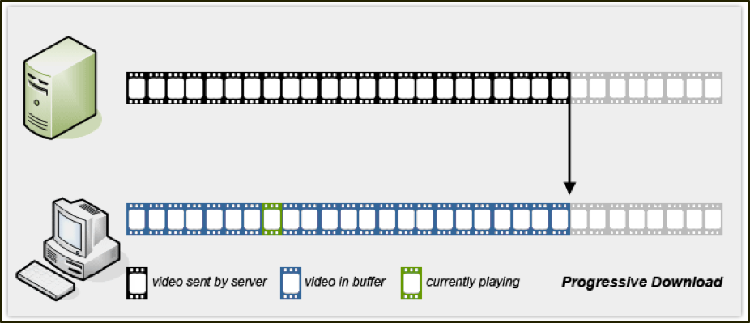
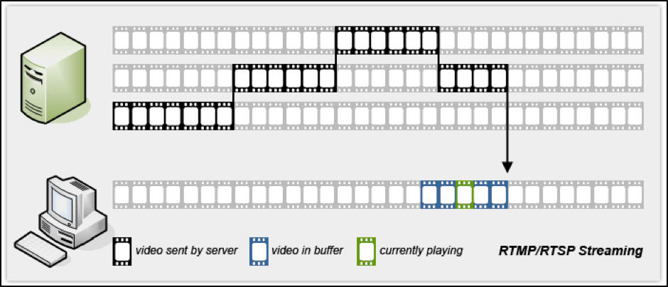
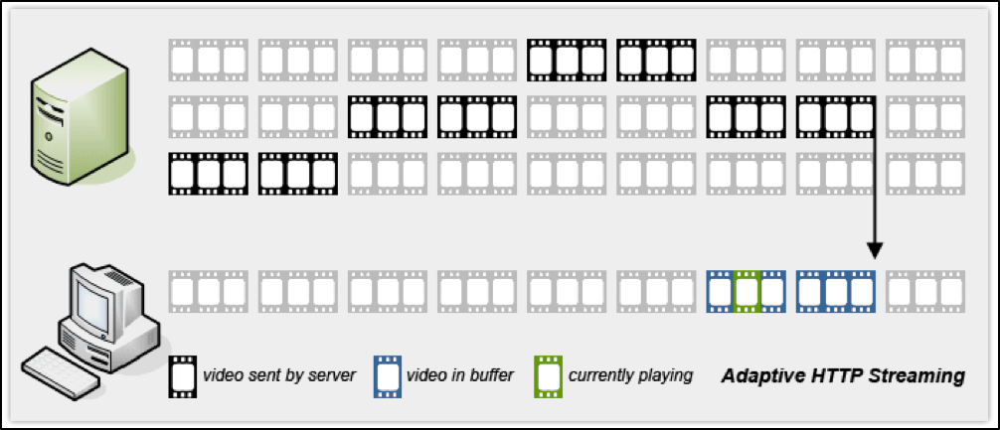
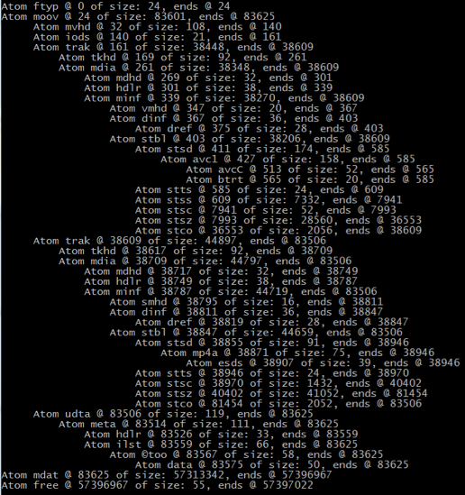
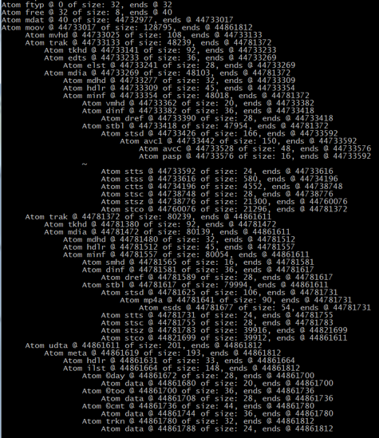
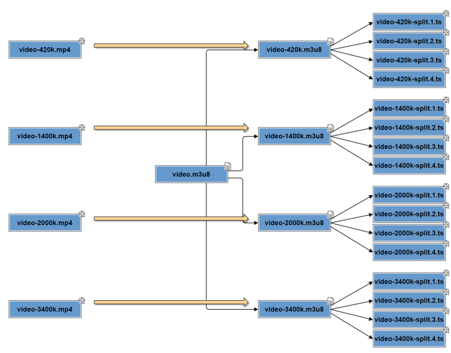

Video Streaming
Flawless Application Delivery
Trainer Intro
James Tacker
Technology Consultant & Content Developer
Previous Training Work:
- Sauce Labs
- New Relic
- Salesforce
- Atlassian

Prerequisites/Expectations
- Sysadmin, DevOps, Solution Architect
- Completed NGINX Core
- Some familiarity with Linux
- Text Editor: Vim, Vi, Emacs etc.
- Solid understanding of Network topologies
The Training Environment
- AWS EC2 Instances
- Ubuntu
- NGINX Plus
- Flowplayer (Flash)
Log Into VM
If you haven't done so already, please take the time to SSH into your EC2 Instances (Windows users use PuTTY).
Check your email for the login credentials, check your spam folder!
ssh student<number>@<ec2-server-hostname>
Course Administration
- Course Duration: 4 hours
- Ask questions at any time!
Agenda
Video Streaming Concepts
Module Objectives
This module reviews the following topics:
- Outline various streaming methods:
- Progressive Download
- Pseudo-Streaming
- RTMP/RTSP Streaming
- Adaptive HTTP Streaming
- Explore Pros and Cons
Progressive Download
Progressive Download
PROS
- Simple Setup
- Works with every HTTP Web Server
CONS
- Low bandwidth can disrupt playback
- Video quality is locked
Pseudo-Streaming
RTMP/RTSP Protocols
- Provides true real time streaming
- No data downloaded in advance
- Video frames are ephemeral
- No third party support for RTSP
Pseudo-Streaming
PROS
- Start at "seekpoint"
- Scrub the Playhead
CONS
- Manifest File
Adaptive HTTP Streaming
Adaptive HTTP Streaming
PROS
- Compatible with most HTTP servers
- Combines Progressive Download and Pseudo-streaming
- Efficient Bandwidth
- Adaptive Bitrate
CONS
- Competing Standards
- No Cross-Platform (HLS)
- Conversion difficulties
NGINX Streaming Modules
Module Objectives
This module enables you to:
- Outline NGINX-supported Streaming Modules
- FLV Module
- MP4 Module
- HLS Module
- F4F Module
- Outline 3rd Party Options
ngx_http_flv_module Module
- Psuedo-Streaming support
- Allows "Seekpoints" and "Scrubbing"
location ~ \.flv$ {
flv;
}
ngx_http_mp4_module Module
- Psuedo-Streaming support
- Video must use H.264 codec
- Requires HTML5 or Flash Player on client side
location /video/ {
mp4;
}
ngx_http_hls_module Module
- HTTP Live Streaming support
- On-the-fly-segmentation
- Note: NGINX only supports VOD
ngx_http_f4f_module Module
- Adobe HTTP Dynamic Streaming Support
- Files need to be pre-processed
Progressive Downloading and Pseudo-Streaming
Module Objectives
This module enables you to:
- Create a progressive download solution
- Create a pseudo-streaming solution
- Utilize the NGINX+ HLS Module
- Utilize the NGINX+ F4F Module
Lab 1.1: Setup Folder Structure
- Create the following directory tree
videos/flvin yourpublic_htmldirectory$ cd /home/student1/public_html $ sudo mkdir -p videos/flv - Move the flash video in your home directory (
wildlife.flv) tovideos/flv$ cd $ sudo mv wildlife.flv public_html/videos/flv - Rename the
index.htmlfile insidepublic_htmltoflvdemo.html$ cd /home/student1/public_html $ sudo mv index.html flvdemo.html
Lab 1.2: Setup NGINX
- Change directory to
conf.d., back updefault.conf, and create a new file calledmedia-server.conf$ cd /etc/nginx/conf.d $ sudo mv default.conf default.conf.bak $ sudo vim media-server.conf - Configure a
serverblock listening on port80and serving content frompublic_htmlserver { listen 80; root /home/student1/public_html; } - Reload the Configuration
$ sudo nginx -s reload
Lab 1.3: Test the Video
- Open
flvdemo.htmland find the following section:$ cd ~/public_html/ $ sudo vim flvdemo.html <a href="<path to your video.flv>" style="display:block;width:520px;height:330px" id="player"> </a> - Replace
<path to your video.flv>with path towildlife.flvand insert the path to flowplayerflowplayer("player", “flowplayer/flowplayer-3.2.18.swf"); - In browser, test:
http//<server>/flvdemo.html
Pseudo-Streaming with Flash™
- Skipping forward while downloading
- Start playback at specific time
- Extra Configuration required on Server-Side
- FLV module (NGINX)
- Metadata
- Flash Player Enablement
Inserting Metadata
- Required for pseudo-streaming
- Metadata Defines keyframe information
- Many insertion tools available:
Using flvmeta
Simple Command Line Options
#To insert metadata
flvmeta <input file> <output file>
#To output metadata for given file
flvmeta <input file>
Lab 2.1: Insert Metadata
- Change directory to your flv directory
$ cd public_html/videos/flv - Run the
flvmetaexecutable against your flash video - Inspect the metadata on both files
- Compare the output difference in the keyframe data
$ flvmeta wildlife.flv wildlife_meta.flv
$ flvmeta wildlife.flv
$ flvmeta wildlife_meta.flv
Enabling Pseudo-Streaming in NGINX
- Add the flv directive to the location block where flv files will be processed
- Video player must support pseudo-streaming, otherwise, playback runs as progressive download
server {
root /home/user/public_html;
location ~ \.flv$ {
flv;
}
}
Lab 2.2: Setup the Content
- Locate the
flvstreamdemo.htmlinpublic_html - Open the file and look for the line:
<a href=“<insert path …”> - Replace the placeholder with
href="/videos/flv/wildlife.flv" - replace the
baseUrlwith'http://<ec2-url>/videos/flv/'
Lab 2.3: Enable Pseudo-Streaming
- Open
media-server.confand define a regex location to process files ending in.flv - Add the
flvdirective in this location block - Save the configuration and reload NGINX
- Open your browser and point to
http://<ec2-url>/flvstreamdemo.html - Play the video and try "seeking" to different video timeline postions
Progressive Download with MP4
Requirements
- Video codec H.264
- Audo codec AAC
The Moov Atom
- Atoms: Units of data regarding video file
- MPEG-4 consists of "moov" atom
- Defines timescale and duration
- Also contains "subatoms"
Moov Atom Location
- Location depends on streaming method
- Playback begins after 'moov' atom data read
- Moov at end of file is suboptimal
Example Atom Structure
Moov at Front
Moov at Back
MP4 Encoding Tools
- Some tools have "fast start", "streaming" options
- Tool that inspects atom: Atomic Parsley
Moving the Moov
Tools to Adjust the Moov location:
Lab 3.1: HTML5 Video Setup
- Inside
public_html/videoscreate a directory calledmp4 - Place
wildlife264.mp4in this directory - Create an html file called
html5demo.htmlin theproxy_passto yourpublic_htmldirectory - Write the following html:
<html>
<body>
<video width="640" height="480" controls>
<source src="/videos/mp4/wildlife264.mp4" type="video/mp4">
</video>
</body>
</html>
Lab 3.2: HTML5 Video Playback
- Open browser and go to
http://<server>/html5demo.html - Play the video and try seeking to a position in the timeline that is still downloading
Note: HTML5 playback doesn't work with IE9 or below
Enabling MP4 Playback with Flash™
- Modern Websites use Flash™ as a fallback
- Flash Player locates the file
Lab 3.3: Enable Flash™ Playback
- Create a copy of
flvstreamdemo.htmland renamie it tomp4demo.html - Look for the path to
wildlife_meta.flvand replace the URL to reference thewildlife264.mp4video with inserted metadata - Open a browser and test
http://<server>/mp4demo.html - Play the video and try seeking. What do you notice?
Add Streaming Support
- mp4 module supports pseudo-streaming through Flash player
- start parameter indicates playback beginning
http://<server>/myvideo.mp4?start=10.5
MP4 Module Example
#process all files ending in .mp4
location ~ \.mp4$ {
mp4;
}
Lab 4: Enable Streaming Support
- Open
media-server.confand add the prefix/videos/mp4 - Place the
mp4directive in the prefix - Open a browser and test:
http://<server>/mp4demo.html - Play the video and try seeking. What do you observe?
Adpative Streaming with HLS
Module Objectives
This module enables you to:
- Understand Basic HLS Concepts
- Understand Adaptive Bitrate
- Utilize Dynamic Segmentation
Introduciton to HLS
- Developed for iOS/OSX
- HTTP Connection
- MP4 H.264/AAC encoding
- MPEG-2 Transport Streams
How HLS Works
.m3u8 and .ts files
.m3u8is index for segments.tsfiles are segments
Adaptive Bitrate
Video Quality based on client and bandwidth
Advantages:
- Quality adjusted on the fly
- Video playback uninteruptted
HLS File Structure Example
Segmentation Tools
- Apple Developer Tools
- Media stream segmenter
- Media file segmenter
- Media stream validator
- Variant playlist creator
- Cloud-Based Tools
Serving Videos with HLS
- No special NGINX configuration
- Player points to .m3u8 file
- Compativility on iOS, Apple TV and Mac OSC
<video>
<source src=“<server>/videos/<video>.m3u8” type=“video/mp4”/>
</video>
Playback on Non-Apple Devices
- Fallback to HTML5
- 3rd party plugins add HLS
<video>
<source src=“<server>/videos/<video>.m3u8”
type=“application/x-mpegURL”/>
<source src=“<server>/videos/<video>.mp4” type=“video/mp4”/>
</video>
Lab 5.1: Setup HLS Video
- Navigate to
public_html/videosand create the sub-tree:hls/samplecd public_html/videos sudo mkdir -p hls/sample - Copy and extract wildlife.tar
wildlife.tar - Inside
public_htmlcopyhtml5demo.htmland rename it tohls_html5demo.html - Open
hls_html5demo.htmland edit the video source tag to point to the mainifest (Wildlife_87721638.m3u8) - Set the
typeattribute to"application/x-mpegURL"
Lab 5.2: Play Video (Non Apple Users)
- Copy the
flashls-0.2.0folder into yourpublic_htmlfolder and rename the folder to:flashls - Go to
flashls/examples/flowplayerand openindex.htmland look for section:clip: { url: “http:// ... - Replace the URL with the path to the main
.m3u8playlist file in the pre-segmented video - Test
http://<server>/flashls/examples/flowplayer - Open Chrome developer tools and observe the individual requests for each
.tssegment
Lab 5.3: Play Video (Apple Users)
- For Mac OS X, open Safari and go to
http://<server>/hls_html5demo.html - Enable developer tools on Safari (look under
Preferences>Advanced), then go to theDevelopmenu and clickShow Web Inspector - On the Web Inspector, click the
timelinestab - Observe the requests and responses and note the individual segments (
.tsfiles) - Try the same URL above on your iPhone and/or iPad browser
Dynamic Segmentation
- Segment mp4 files on the fly
- hls: Enables streaming support for prefix/regex
- hls_fragment: segment duration
- Stream bitrate = encoded bitrate
Dynamic Segmentation Example
# Turns on HLS processing for all files (MP4) within # the location path
location /videos/hls {
hls;
hls_fragment 10s;
}
Multiple Bitrate Support
- NGINX's segmentation uses bitrate of source file
- Must have MP4 file encoded to each bitrate
- Segment into .ts files and creates a playlist
- Master playlist references files for each bitrate
Lab 6.1: Setup Dynamic Segmentation
- Copy the MP4 video in
videos/mp4tovideos/hls - In
media-server.conf, add the prefixvideos/hls - Enable
hlsand configure thehls_fragmentlength to5s - Save and reload NGINX
- Open
public_html/hls_html5video.html - Edit the video tag so the source points to the MP4 inside
videos/hls - Read the
access_logto see request destinations - Add a fallback option to play the same MP4 video location in
videos/mp4
Lab 6.2: Video Playback
For Mac Users
- For Mac OS X, open Safari and go to
http://<server>/hls_html5demo.htmlmain.conf - Open Developer Tools. Observe requests and responses and note the individual segments (
.tsfiles)
For Windows/Linux Users
- Test
http://<server>/hls_html5demo.html - Modify
urlforflashls/examples/flowplayer/index.htmlto/videos/hls/wildlife264.mp4.m3u8 - Test:
http://<server>/flashls/examples/flowplayer
Lab 6.2: Video Playback
Example
Adpative Streaming with HDS
Module Objectives
This module enables you to:
- Understand Basic HDS Concepts
- Configure manifest for Multiple Bitrate
Intro to HDS
- HTTP Connections
- mp4 fragments
- H.264 or VP6, ACC or MP3
- On-the-fly bitrate
How HDS Works
- Adobe File Packager Segments
.f4f= MP4- Each segment is further divided into smaller fragments
.f4m= Flash Manifest.f4x= index file.bootstrap= segment bootstrap
Example HDS File Structure
Segmenting MP4 Files
#Create a f4m, f4v and f4f file using video.mp4 as the source
#(Note: command is all on one line)
f4fpackager.exe
--input-file=C:\videos\video.mp4
--output-path=C:\encodedvids
HDS Playback Support
Enabling HDS on NGINX
location /videos/hds {
f4f;
}
Lab 6.1: Setup HDS Files
- In
public_html/videoscreate the directory:hds - Move
HDS_concert_h264.tararchive intohdsand extract the .tar filesudo tar xvf HDS_concert_h264.tar - Open
HDS_concert_h264.tarand verify the presence of the.f4m,.f4fand.f4xfiles
Lab 6.2: Configure HDS for NGINX
- Open
media-server.conf - Add a
locationblock with a prefix/videos/hdsand enable thef4fdirectiveserver { ... location /videos/hds { f4f; } } - Save and reload NGINX
Lab 6.3: Configure Flash Player
- Inside
public_htmlopen the filehdsdemo_template.html - Find all sections which say
'insert video path'and replace them with the path of thef4mfile - Find the
baseUrlproperty which has the placeholder'insert server URL'and replace the placeholder with your AWS server URL - Open your browser (recommended Chrome) and go to
http://<server>/hdsdemo_template.html - Save and reload NGINX
- Test in a local browser (refresh multiple times)
- Read the
access_logto see destination of request
Lab 6.3: Configure Flash Player
Manifest File for Multiple Bitrate
- Source video encoding
- Start from lowest to highest
- Highest bitrate used
Handling Multiple Bitrate
Example Multiple Bitrate Configuration
#Assume we have 3 source files called video_750kbps.mp4, #video_1500kbps.mp4 and video_2500kbps.mp4
f4fpackager.exe
--input-file=video_750kbps.mp4
--bitrate=750
f4fpackager.exe
--input-file=video_1500kbps.mp4
--manifest-file=C:\vids\video_750kbps.f4m
--bitrate=1500
f4fpackager.exe
--input-file=video_2500kbps.mp4
--manifest-file=C:\vids\video_1500kbps.f4m
--bitrate=2500
Video Streaming Tips and Tricks
Limit Rate: Download Speeds
location /media {
limit_conn ipzone 5;
limit_rate 50k;
}
Limit Rate: Build Buffer
location /videos {
limit_rate_after 500k;
limit_rate 50k;
}
MP4 Limit Rates
Syntax:
mp4_limit_rate on | off | factor;
location /videos/mp4 {
mp4;
mp4_limit_rate on;
}
MP4 Limit Rate After
Syntax:
mp4_limit_rate_after <time>
location /videos/mp4 {
mp4;
mp4_limit_rate on;
mp4_limit_rate_after 60s;
}
Caching HLS Segments
- Suggested for on-the-fly segmentation
- HLS backend with frontend reverse proxy
Example Cache Backend Node
#Cache (at HTTP context)
proxy_cache_path /data/nginx/cache levels=1:2
keys_zone=vid_vache:20m max_size=1000m inactive=600m;
proxy_temp_path /tmp/nginx;
#Backend server
server {
listen 8080;
root /data/nginx/cache;
location / {
hls;
hls_fragment 10s;
}
}
Example Reverse Proxy
server {
listen 80;
root /home/student1/public_html;
error_log /var/log/nginx media-server.error.log;
location /videos/hls {
proxy_pass http://myHLSBackend;
proxy_cache vid_cache;
proxy_cache_valid 10m;
proxy_set_header Host $host;
proxy_set_header X-Real-IP $remote_addr;
proxy_set_header X-Forwarded-For $proxy_add_x_forwarded_for;
}
}
Lab 7.1: NGINX+ Backend Setup
- On NGINX+ backend, create the directory tree:
sudo mkdir -p /usr/share/nginx/media/videos - Download the video files into the
videosdirectory - In
/etc/nginx/conf.dcreate conf file:hls-server.conf - Define a server block with the following details:
server { listen 8080; root /usr/share/nginx/media/videos; access_log /var/log/nginx/hls-server.access.log combined; location / { hls; hls_fragment 5s; } }
Lab 7.2: Reverse Proxy Cache
- On NGINX+ proxy, create a directory for cached files
sudo mkdir -p /data/nginx/cache - Open
media-server.confand define a cache pathproxy_cache_path /data/nginx/cache levels=1:2 keys_zone=vid_cache:20m max_size=1000m inactive=600m; - In
/videos/hlsprefix, configureproxy_passproxy_pass http://<ec2-backend-hostname>:8080; - Delete
hlsdirectives and add the following:proxy_cache vid_cache; proxy_cache_valid 10m; proxy_set_header Host $host; proxy_set_header X-Real-IP $remote_addr; proxy_set_header X-Forwarded-For $proxy_add_x_forwarded_for;
Lab 7.2: Setup Status Page
- Create a new conf called
staus.conf - Define a
serverblock that listens on9090with arootdirectory of/usr/share/nginx/html - Create
location = /statusprefix and enable thestatusdirective. - In a local terminal, make a series of requests:
curl http://<ec2-proxy-hostname>/videos/hls/<name_of_video_file> - Test the
status.htmlpage to view the cache tabhttp://<ec2-proxy-hostname>:9090/status.html
sudo vim /etc/nginx/conf.d/status.conf
Session Log Aggregation
- Aggregates fragment requests into a single entry
- Reduces overall size
- Saves log space, makes debugging easier
Session Log Setup
sesison_log_zone: defines shared memory zonepath: path to logsformat: format of logszone: name and size of zonetimeout: inactive parameter for requestsmd5: hash value
Session Log Example
session_log_zone /path/to/log format=combined zone=one:1m
timeout=30s md5=$binary_remote_addr$http_user_agent;
server {
listen 80;
location /hls {
session_log one;
}
}
Session Log Comparison
Standard Access Log
Session Log
59.167.165.193 - -
[22/Sep/2016:00:48:26 +0000]
"GET" /videos/hls/soudwave264_meta.mp4.m3u8
HTTP/1.1" 200 18029463
"http://ec2-23-32-161-170.compute-1.amazonaws.com/flashls/examples/flowplayer/"
"Mozilla/5.0 (Windows NT 6.1 WOW64)
AppleWebKit/537.36 (KHTML, like Gecko)
Chrome/37.0.2062.120 Safari/537.36"
Lab 8: Session Logging
- Open
media-server.confand setup a shared memory zone forhls - Enable session logging for /videos/hls
session_log one; - Play your video by hitting
http://<ec2-proxy-hostname?/videos/hls/<video_file> - View each video fragment:
media-server.access.log - Terminate the current session by closing the browser/tab and open
hls_sessions.log, what do you notice?
session_log_zone /var/log/nginx/hls_sessions.log
format=combined zone=one:1m
timeout=15s md5-$binary_remote_addr$http_user_agent;